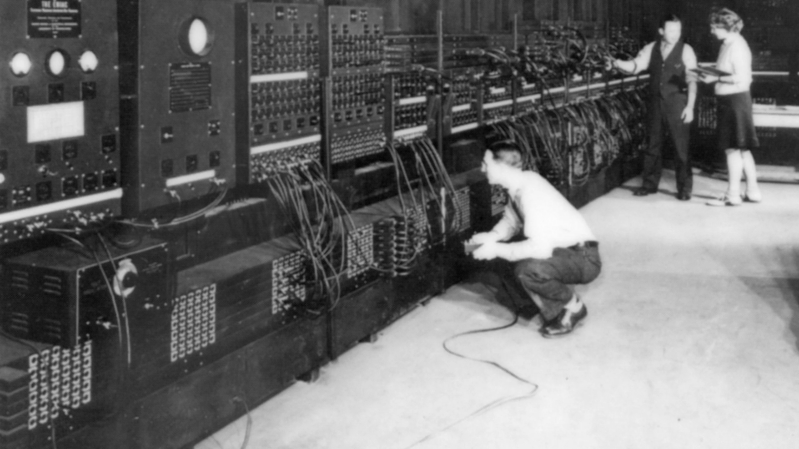

Интересные факты
ENIAC
ENIAC (Electronic Numerical Integrator and Computer) — один из первых электронных компьютеров, созданный в 1945 году. Он занимал целую комнату и весил около 30 тонн, но был невероятно мощным для своего времени.

Дискеты
Дискеты были популярными носителями данных в 1980-х и 1990-х годах. Они были тонкими, гибкими и могли хранить до 1.44 МБ информации. Сегодня они стали реликвией, уступив место USB-накопителям и облачным хранилищам.

Первая мышь
Первая компьютерная мышь была изобретена Дугласом Энгельбартом в 1964 году. Она была сделана из дерева и имела всего одну кнопку. Сегодняшние мыши имеют множество кнопок, сенсорные панели и даже беспроводные технологии.

Первая камера
Первая цифровая камера была разработана в 1975 году инженером Kodak Стивеном Сассоном. Она весила около 3.6 кг и могла записывать только черно-белые изображения с разрешением 0.01 мегапикселя. Сегодня камеры в наших смартфонах имеют разрешение в десятки мегапикселей и множество функций.